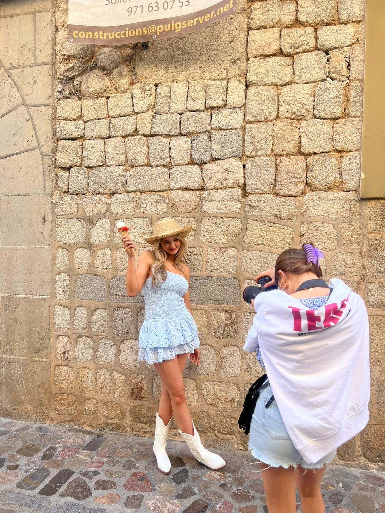

MeetMeThere


MeetMeThere is een bedrijfje wat erg populair is en steeds populaider wordt, voornamelijk onder de tiener meiden. In 2019/2020 kwam het bedrijf tot stand samen met 1 ander bedrijf genaamd FashionTiger waarmee MeetMeThere nog vaak collabs mee heeft. De eigenaresse van MMT (MeetMeThere) is namelijk beste vriendinnen met de eigenaresse van FT (FashionTiger). Het bedrijf verkoopt voornamelijk kleding maar naast kleding ook schoenen, sieraden en accessoires. Om dat allemaal online te kunnen zetten en te verkopen heb je natuurlijk ook modellen nodig. Zo'n model die heeft dan een of meerdere items aan en wordt dan gefotografeerd zodat die foto's online verkocht kunnen worden. Maar hoe werkt dat dan precies om bij dat bedrijf model te zijn en wat moet je daar allemaal voor doen? Nou daar kom je achter op deze site waarin een model van dat bedrijf genaamd Amber den Hartog alles gaat uitlegen en vertellen hoe het in zijn werk gaat.
Er zijn natuurlijk super veel meiden die model willen zijn voor dit bedrijf en soms ook graag kijken en willen weten hoe de modellen van MMT nou zijn en wie ze precies nou allemaal zijn.
- hieronder bevinden zich alle namen van de modellen en wat info over hunzelf.
- Iza Veltkamp: 15 jaar oud, de eerste model van MMT en dol op kipnuggets.
- Carlijn Kortwijk: 15 jaar oud, de tweede model van MMT en ben er via tiktok bijgekomen.
- Amber den Hartog: 15 jaar oud, derde model van MMT en meer info staat bij het kopje "model amber".
- Sofie Schlebos: 15 jaar oud, vierde model van MMT en heeft de meeste volgers op tiktok.
- Jorinde Niemarkt: 15 jaar oud, vijfde model van MMT en is de jongste.
- Fenne Zietse: 15 jaar oud, zesde model van MMT en is de enige met bruin haar.
- Kyra Engelsman: 16 jaar, zevende model van MMT en is de oudste en laatste model.